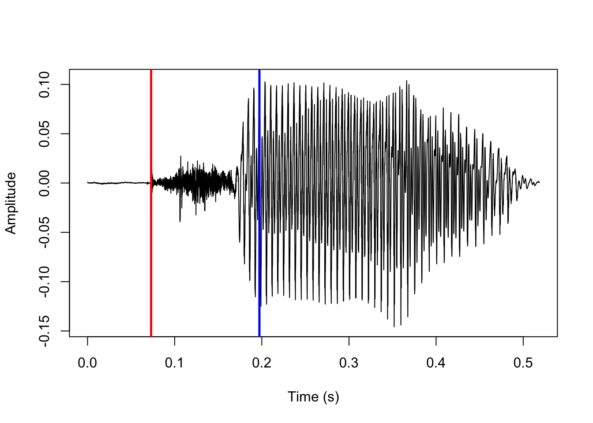

#install devtools if needed
#install.packages('devtools')
library(devtools)
devtools::install_github('rpuggaardrode/getVOT')Predicting VOT-related landmarks in R with getVOT
Overview
getVOT is a developmental R package which predicts voice onset time (VOT) automatically. It can be installed from GitHub like so:
In most cases, VOT can be delimited visually from a waveform using a few clearly defined landmarks.
In voiceless stops, the first landmark is a sudden increase in amplitude following a period of silence, which corresponds to the stop release, and the second landmark is the onset of periodicity in the waveform corresponding to the onset of voicing. These two landmarks are shown here:
#load sound file and TextGrid using rPraat
vl_snd <- rPraat::snd.read('vl/1.wav')
vl_tg <- rPraat::tg.read('vl/1.TextGrid')
#rPraat loads sound files as a list, containing e.g. a vector of audio samples ($sig)
#which we plot as a regular line plot with the base plotting function.
#the list also has information about time stamps ($t) which we plot on the x axis,
#showing 50 ms to 250 ms.
plot(x=vl_snd$t, y=vl_snd$sig, type='l', xlab='Time (s)', ylab='Amplitude',
xlim=c(0.05, 0.25))
#TextGrids are loaded as a named list of tiers, this one has a tier called 'man'
#containing manually annotated VOT.
#each tier is itself a list including information about segmentations and start
#and end time of each interval.
#here we plot a blue vertical line for each interval of 'man'
abline(v=vl_tg$man$t1, col='blue')In voiced stops, the process is essentially reversed: the first landmark is the onset of periodicity following a period of silence corresponding to the voicing onset, and the second landmark is a sudden increase in amplitude corresponding to the stop release. (Alternatively, the stop release is signaled by a transient phase, which is not easy to spot in the waveform but can usually be recognized by its spectral shape.) These two landmarks are shown below.
vd_snd <- rPraat::snd.read('vd/1.wav')
vd_tg <- rPraat::tg.read('vd/1.TextGrid')
plot(x=vd_snd$t, y=vd_snd$sig, type='l', xlab='Time (s)', ylab='Amplitude',
xlim=c(0.05, 0.25))
abline(v=vd_tg$man$t1, col='blue')getVOT attempts to predict these landmarks by loading sound files into R and using relatively simple algorithms to find those landmarks in the vector of samples corresponding to the waveform.
The goal is to partially make automatic, or at least aid in, the job of annotating VOT. There are other and more sophisticated algorithms available for predicting VOT, including AutoVOT (see Eleanor Chodroff’s tutorial) and Dr.VOT. The job of getVOT is not to replace or even necessarily outperform these. AutoVOT only predicts positive VOT and scales best with a fair amount of training data; Dr.VOT predicts both positive and negative VOT, but can be a bit daunting to set up and difficult to manipulate; both can only be used on Unix-style operating systems. getVOT should be easy to set up and get started with, should be compatible with all operating systems, and should scale fairly well with little to no training data. This makes getVOT optimal for smaller data sets where providing suitable training data is difficult.
It should be noted though that this tutorial presents the very first publicly available version of getVOT, which is so far available only on GitHub. It is not perfect and the plan is to keep improving the code If you as a user run into any issues, you are encouraged to report an issue on the GitHub page.
In the next sections of this tutorial I give some examples of the most common use cases of the package. After that, for those interested, I summarize what is happening under the hood. I hope this may serve as general inspiration for those who want to solve acoustic problems in R programmatically. Perhaps inspiration will strike, and you’ll even come up with a more suitable method for finding VOT-related landmarks!
Predicting VOT with default parameters
The two most important getVOT functions in daily use are VOT2newTG() and addVOT2TG(). As the names suggest, VOT2newTG() will generate a new TextGrid where no annotations exist already. In this case, sound files should be short and consist of only a single word beginning with a stop. addVOT2TG() adds a new tier to an existing TextGrid with predicted VOT. In this case sound files can be any duration, but the existing TextGrid should indicate the rough location of stops.
VOT2newTG()
VOT2newTG() works like this:
library(getVOT)
VOT2newTG(directory='vl', sign='positive')[1] "1.TextGrid was not processed as this function only works with\n sound files with the .wav extension"
[1] "1.wav processed"The directory argument takes the name of a directory with sound files to be processed. The sign argument tells getVOT to use either positive or negative VOT. The default is actually both, i.e. sign = c('positive', 'negative'); in this case, a simple algorithm is used to try to predict whether VOT is positive or negative, but this algorithm is far from perfect so for now it is recommended to specify either positive or negative.
After running the above code, a new subdirectory of vl is created called tg:
list.dirs('vl', recursive=TRUE)[1] "vl" "vl/tg"The tg subdirectory contains TextGrid files for each processed sound file (which in this toy case is just 1):
list.files('vl/tg')[1] "1.TextGrid"Let’s load that TextGrid into R with rPraat::tg.read() and show the results:
vl_tg_predVOT <- rPraat::tg.read('vl/tg/1.TextGrid')
plot(x=vl_snd$t, y=vl_snd$sig, type='l', xlab='Time (s)', ylab='Amplitude')
#first element of the t1 vector excluded because 0 is always the start time of an interval
abline(v=vl_tg_predVOT$vot$t1[-1], col='blue')The results are a quite good, but a few ms off – we will return to this point in the next section.
addVOT2TG()
addVOT2TG() works like this:
addVOT2TG(directory='vd', sign='negative',
tg_tier='stops', seg_list='b')[1] "1 processed"The directory must be the name of a directory with sound file/TextGrid pairs, indicating roughly where to look for stops. In this case, we have just a single pair where the TextGrid has a tier named stops (the tg_tier argument), with one interval labeled b (the seg_list argument). This does not have to be a perfect match; the function will search for all intervals where the first character matches the strings in seg_list; this can be a single string like 'b', but could also be multiple strings like c('b', 'd', 'g').
This was the position of the interval in the original TextGrid:
plot(x=vd_snd$t, y=vd_snd$sig, type='l', xlab='Time (s)', ylab='Amplitude')
abline(v=vd_tg$stops$t1[-1], col='red')
#write the TextGrid label at specified coordinates
text(y=-0.3, x=0.11, labels=vd_tg$stops$label, col='blue', cex=2)As before, the function creates a new subdirectory vd/vot with copies of the original TextGrids and a new tier with predicted VOT. The name of the new tier is set with the addVOT2TG() argument new_tier_name; default is vot. Let’s load in the new TextGrid and have a look at the results.
vd_tg_predVOT <- rPraat::tg.read('vd/vot/1.TextGrid')
plot(x=vd_snd$t, y=vd_snd$sig, type='l', xlab='Time (s)', ylab='Amplitude')
abline(v=vd_tg$stops$t1[-1], col='red')
text(y=-0.3, x=0.11, labels=vd_tg$stops$label, col='blue', cex=2)
abline(v=vd_tg_predVOT$vot$t1[-1], col='blue')Setting parameters with training data
Under the hood, the functions we’ve just seen will call the functions positiveVOT() and negativeVOT() which is where the actual VOT prediction is implemented. These functions take a bunch of obscure arguments which can be used to tweak the performance.
args(positiveVOT)function (sound, sr, closure_interval = 10, release_param = 15,
vo_method = "acf", vo_granularity = 1, vo_param = 0.85, f0_wl = 30,
f0_minacf = 0.5, burst_only = FALSE, f0_first = FALSE, plot = TRUE,
params_list = NULL)
NULLargs(negativeVOT)function (sound, sr, vo_method = "acf", closure_interval = 10,
vo_granularity = 1.2, vo_param = 0.9, f0_wl = 50, f0_minacf = 0.5,
vo_only = FALSE, rel_method = "transient", plot = TRUE, params_list = NULL)
NULLThese parameters cannot be changed directly in VOT2newTG() and addVOT2TG(), but both functions take the arguments pos_params_list and neg_params_list which can be used to change the parameters. These params_lists should be named lists containing new settings for most of the positiveVOT() and negativeVOT() arguments; they can be written by hand, but since the arguments are not very easy to interpret, the idea is that they are written automatically using training data. The default parameters are chosen because they usually give quite good results, but mileage may vary a lot, so it is recommended to do this.
Training data should consist of sound file–TextGrid pairs. The sound files should be representative of the data that the user wants processed; if there are existing TextGrids (i.e., if the target function is addVOT2TG()), the training data should consist of short extracted sound snippets corresponding to the existing segmentation. The TextGrid should contain manually annotated VOT in the first tier. A small training set of say 5–10 pairs should give quite good results.
Automatic parameter setting is implemented in the functions neg_setParams() and pos_setParams(). I’ll demonstrate pos_setParams() below for a training set with three WAV–TextGrid pairs. The only obligatory argument in either case is directory, the location fo the training data. Note that these functions can take a long time to run – they try to predict VOT using a large range of parameters and return a list with the parameters that minimize the average difference between predicted VOT and manually annotated VOT.
opt_params <- pos_setParams(directory='vl_training')[1] "Testing burst detection parameter settings for 1.wav"
[1] "Testing burst detection parameter settings for 2.wav"
[1] "Testing burst detection parameter settings for 3.wav"
[1] "On average, the selected burst detection parameters after a first pass agree with the training data within a margin of 0.014 ms"
[1] "Finetuning burst detection parameter settings for 1.wav"
[1] "Finetuning burst detection parameter settings for 2.wav"
[1] "Finetuning burst detection parameter settings for 3.wav"
[1] "On average, the selected burst detection parameters after finetuning agree with the training data within a margin of 0.014 ms"
[1] "Testing voicing onset parameter settings for 1.wav"
[1] "Testing voicing onset parameter settings for 2.wav"
[1] "Testing voicing onset parameter settings for 3.wav"
[1] "On average, the selected voicing onset parameters after a first pass agree with the training data within a margin of 2.884 ms"
[1] "Finetuning voicing onset parameter settings for 1.wav"
[1] "Finetuning voicing onset parameter settings for 2.wav"
[1] "Finetuning voicing onset parameter settings for 3.wav"
[1] "On average, the selected voicing onset parameters after finetuning agree with the training data within a margin of 2.705 ms"In addition to returning a list of optimized parameters, the setParams() functions will also print a bunch of messages in the terminal and return a plot. The messages will give an indication of how well the selected parameters fit the training data; in this case, the predicted bursts are extremely close to the annotated bursts, and predicted voicing onset is on average within roughly 3 ms of annotated voicing onset, which is within a reasonable margin of error. The returned plot will show the sound wave, with blue lines indicating manually annotated VOT, and red lines indicating predicted VOT. When the function is really successful, the red lines will not be visible at all.
These are the returned parameters:
opt_params$closure_interval
[1] 8
$vo_granularity
[1] 1.4
$vo_param
[1] 0.92
$release_param
[1] 15
$f0_first
[1] FALSE
$vo_method
[1] "acf"
$f0_wl
NULL
$f0_minacf
NULLNote that they differ slightly from the default positiveVOT() parameters we saw above. In the next section, I’ll explain these parameters in more detail.
When we previously attempted to predict the VOT of an aspirated stop, the results were a tad off. Let’s try again with our opt_params and see if the results are better.
VOT2newTG(directory='vl', sign='positive', pos_params_list=opt_params)[1] "1.TextGrid was not processed as this function only works with\n sound files with the .wav extension"
[1] "1.wav processed"We’ll load the resulting TextGrid into R, zoom into the sound a bit, and compare the previous results with default parameters (in red) with the new results with optimized parameters (in blue).
vl_tg_predVOT_opt <- rPraat::tg.read('vl/tg/1.TextGrid')
plot(x=vl_snd$t, y=vl_snd$sig, type='l', xlab='Time (s)', ylab='Amplitude',
xlim=c(0.05, 0.25))
abline(v=vl_tg_predVOT$vot$t1, col='red')
abline(v=vl_tg_predVOT_opt$vot$t1, col='blue')There is no noticeable difference in the predicted burst location, but the predicted voicing onset location is significantly improved.
How does it work?
In this section, I briefly describe what is going on under the hood when VOT is predicted. This should also help understand all the obscure arguments that make up the parameters lists.
Positive VOT
Positive VOT is predicted using the function positiveVOT(). The process will be exemplified using this sound file:
vl_ex <- rPraat::snd.read('vl_training/1.wav')
plot(x=vl_ex$t, y=vl_ex$sig, type='l', xlab='Time (s)', ylab='Amplitude')The first step to this process is to look for a stop closure. We do this by dividing up the first half of the sound file into intervals of duration closure_interval (default is 10 ms), and finding the one with the lowest mean amplitude. The intervals look like this:
#extract the sound samples, specify column 1 to get vector instead of array (there's only 1 column so doesn't matter)
sound <- vl_ex$sig[,1]
#extract sample rate
sr <- vl_ex$fs
#set closure interval to default 10
closure_interval <- 10
#convert closure interval to seconds
ci <- closure_interval/1000
#how many 10 ms intervals in the first half of the sound file? round up
sqlen <- ceiling(length(sound)/2 / sr / ci)
#make vector of 10 ms intervals
sq_clo <- seq(from=sr*ci, to=sqlen*sr*ci, by=sr*ci)
plot(y=sound, x=vl_ex$t, type='l', ylab='Amplitude', xlab='Time (s)')
#add grey vertical lines each 10 ms
abline(v=sq_clo/sr, col='grey')The midpoint of the interval with the lowest mean amplitude is assumed to be part of the stop closure. This point is marked in red below.
#make empty vector
mean_amp <- c()
#set counter
i <- 1
#loop through intervals
for (s in sq_clo) {
#fill vector with mean amplitude by interval ignoring sign
mean_amp[i] <- mean(abs(sound[(s-(sr*ci)+1):s]))
#increase counter
i <- i+1
}
#closure is halfway through the interval with lowest mean amplitude
clo <- (which(mean_amp==min(mean_amp)) - 0.5) * sr * ci
plot(y=sound, x=vl_ex$t, type='l', ylab='Amplitude', xlab='Time (s)')
abline(v=sq_clo/sr, col='grey')
#add vertical line at predicted closure
abline(v=clo/sr, col='red', lwd=2.5)Next up, we predict that the stop release is the first brief interval after the closure where the amplitude is above some baseline. We split up the rest of the sound file after the predicted closure into intervals of 1 ms. We predict that the release is the first interval where the maximum amplitude is above a 1 / release_param (default is 15) proportion of the highest amplitude in the sound. The highest amplitude is marked in blue here:
plot(y=sound, x=vl_ex$t, type='l', ylab='Amplitude', xlab='Time (s)')
#add vertical line at highest amplitude
abline(v=which.max(sound)/sr, col='blue', lwd=2.5)And this is the first interval where the maximum amplitude is above 1/15 of that, marked in red:
#set release_param argument at default 15
release_param <- 15
#named object for number of samples per 1 ms, must be a whole number
step <- round(1 * (sr/1000))
#make vector of 1ms intervals after predicted closure
sq_rel <- seq(from=clo, to=length(sound), by=step)
#empty vector, reset counter
max_amp <- c()
i <- 1
#loop through 1ms intervals
for (s in abs(sq_rel)) {
#fill vector with most extreme amplitude per interval, ignoring sign
max_amp[i] <- max(abs(sound[s:(s+step-1)]))
i <- i+1
}
#determine baseline amplitude for predicting stop release
spike_size <- max(abs(sound))/release_param
#make vector of intervals above baseline
spike <- which(max_amp > spike_size)
#determine location of first interval above baseline
rel <- abs((clo[1] + ((spike[1])*step))-step)
plot(y=sound, x=vl_ex$t, type='l', ylab='Amplitude', xlab='Time (s)')
abline(v=which.max(sound)/sr, col='blue', lwd=2.5)
#add vertical line for predicted release
abline(v=rel/sr, col='red', lwd=2.5)
Next up, by default we predict that the voicing onset is the first short interval where the mean autocorrelation of samples is above some baseline. We split the rest of the sound file after the predicted release into intervals with a duration of vo_granularity ms (default is 1), and assume that the first voiced interval is the one where samples are on average autocorrelated more than vo_param % (default is 0.85, i.e. 85%) of the most autocorrelated interval in the sound file. The general idea is that voiced intervals are periodic, so correlation between adjacent samples should generally be quite high. On the other hand, intervals that occur during a voiceless stop release are noisy, so correlation between adjacent samples should be very low.
This may need a bit of unpacking. The most autocorrelated 1 ms interval is indicated with a blue line here:
#set vo_granularity as default 1
vo_granularity <- 1
#convert vo_granularity to number of samples
vo_int <- vo_granularity*step
#make vector of intervals
sq_vo <- seq(from=rel+(step*5), to=rel+(step*200), by=vo_int)
mu_acf <- c()
i <- 1
for (s in sq_vo) {
#run acf on samples in interval, don't plot, ignore NAs
acf <- stats::acf(sound[s:(s+step-1)], plot=F,
na.action=stats::na.pass)
#fill vector with mean autocorrelation across all lags
mu_acf[i] <- mean(acf$acf)
i <- i+1
}
plot(y=sound, x=vl_ex$t, type='l', ylab='Amplitude', xlab='Time (s)')
#add vertical line for most autocorrelated interval
abline(v=sq_vo[which.max(mu_acf)]/sr, col='blue', lwd=2.5)
If we zoom into just that one ms interval, it looks like this:
#determine location of samples in most autocorrelated interval
max_acf <- ((which.max(mu_acf))*step)+rel
#plot just those samples from the sound object
plot(sound[max_acf:(max_acf+vo_int)], type='l', ylab='Amplitude',
xlab='Time (individual samples)')This clearly looks periodic. If we use the function acf() as below, we can see that adjacent samples are highly correlated, and autocorrelation with samples at lags up to six samples removed is generally quite high.
#rerun acf on that interval, plot results this time
acf(sound[max_acf:(max_acf+vo_int)], main='')This, on the other hand, is our least autocorrelated interval:
plot(y=sound, x=vl_ex$t, type='l', ylab='Amplitude', xlab='Time (s)')
#add vertical line for least autocorrelated interval
abline(v=rel/sr+sq_vo[which.min(mu_acf)]/sr, col='blue', lwd=2.5)If we zoom in to just that one interval, we see a very jagged line.
min_acf <- ((which.min(mu_acf))*step)+rel
plot(sound[min_acf:(min_acf+vo_int)], type='l', ylab='Amplitude',
xlab='Time (individual samples)')
And running acf() again, we see that autocorrelation is very low.
acf(sound[min_acf:(min_acf+vo_int)], main='')The first interval where the mean autocorrelation is above 85% of the most autocorrelated interval (i.e., the predicted voicing onset) is indicated with a red line here:
#set vo_param as default 0.85
vo_param <- 0.85
#create vector of intervals where autocorrelation is above voicing onset baseline
hi_acf <- which(mu_acf > max(mu_acf, na.rm=T)*vo_param)
#voicing onset is predicted to be 1ms after the start of the second interval
#above the baseline. helps to reduce the influence of random fluctuations, and
#usually the start of the first interval above the baseline precedes visible voicing.
vo <- (rel + (hi_acf[2]*(step*vo_granularity)) + step)
plot(y=sound, x=vl_ex$t, type='l', ylab='Amplitude', xlab='Time (s)')
abline(v=sq_vo[which.max(mu_acf)]/sr, col='blue', lwd=2.5)
abline(v=vo/sr, col='red', lwd=2.5)Using the default parameters, this is exactly what goes on under the hood when the function positiveVOT() is called! One of the default parameters is vo_method='acf', which implements the autocorrelation-based method for predicting voicing onset that we just saw. This is generally the most precise and by far the fastest method, but it is also a little fickle and will fail for lower quality audio or adverse recording conditions.
For this reason, another possibility is using the alternative vo_method='f0'. This method simply runs the pitch tracking algorithm implemented in the pitchtrack() function in the phonTools package, and predicts that voicing onset begins at the time of the first successful pitch measure after the stop release. The arguments f0_wl and f0_minacf are passed along to phonTools::pitchtrack() (as that function’s arguments minacf and windowlength). Note that the default f0_wl is 30 ms, which is quite a bit lower than the phonTools::pitchtrack() default of 50; this seems to give better results when the purpose isn’t actually to measure pitch, but to find the first instance of voicing.
Finally, positiveVOT() also takes the argument f0_first, where the default is FALSE. If set to TRUE, the prediction process starts by finding the longest stretch of continuous pitch using phonTools::pitchtrack(), and subsequently looking for a stop release only within the 200 ms preceding the beginning of that stretch. As with vo_method='f0', this is a relatively slow method, but can give better results when the recordings conditions and/or audio quality is suboptimal.
Negative VOT
Negative VOT is predicted using the function negativeVOT(). The process will be exemplified using the same voiced stop as we saw above. Just as when predicting positive VOT, the first step is to locate a stop closure by searching for the most silent interval of duration closure_interval (default is 10) in the first half of the sound file. The implementation and result of this are shown here:
#extract sound samples and overwrite sound object
#see same procedure for positiveVOT() above for commented code
sound <- vd_snd$sig[,1]
closure_interval <- 10
ci <- closure_interval/1000
sqlen <- ceiling(length(sound)/2 / sr / ci)
sq_clo <- seq(from=sr*ci, to=sqlen*sr*ci, by=sr*ci)
mean_amp <- c()
i <- 1
for (s in sq_clo) {
mean_amp[i] <- mean(abs(sound[(s-(sr*ci)+1):s]))
i <- i+1
}
clo <- (which(mean_amp==min(mean_amp)) - 0.5) * sr * ci
plot(y=sound, x=vd_snd$t, type='l', ylab='Amplitude', xlab='Time (s)')
abline(v=clo/sr, col='red', lwd=2.5)The default method for finding voicing onset is very similar for voiced and voiceless stops: the rest of the sound file after the predicted time of closure is divided into short intervals of duration vo_granularity (default is here 1.2 ms), and voicing onset is predicted to be the first interval where autocorrelation of samples within the interval is above some baseline – default is 90% of the most highly autocorrelated interval in the sound file (vo_param = 0.9). The implementation and result of this are shown here:
#set vo_granularity as default 1.2
vo_granularity <- 1.2
#create vector of intervals
sq_vo <- seq(from=clo, to=length(sound), by=(step*vo_granularity))
#set vo_param as default 0.9
vo_param <- 0.9
mu_acf <- c()
i <- 1
#see same procedure for positiveVOT() above
for (s in sq_vo) {
acf <- stats::acf(sound[s:(s+(step*vo_granularity)-1)], plot=F,
na.action=stats::na.pass)
mu_acf[i] <- mean(acf$acf)
i <- i+1
}
hi_acf <- which(mu_acf > max(mu_acf, na.rm=T)*vo_param)
f0_start <- (clo + (hi_acf[2]*(step*vo_granularity)) + step)
plot(y=sound, x=vd_snd$t, type='l', ylab='Amplitude', xlab='Time (s)')
abline(v=f0_start/sr, col='red', lwd=2.5)As with positiveVOT(), negativeVOT() offers the alternative method for locating voicing onset vo_method='f0' with the default settings f0_wl=50 and f0_minacf=0.5 passed onto the pitchtrack() function of the phonTools package.
Finding the release of a prevoiced stop is trickier. The default method of negativeVOT() is to search for the so-called transient phase (rel_method='transient'). The transient phase of a stop is when the compressed air in the oral tract is discharged immediately at the time of the stop release. This results in a fairly even distribution of energy throughout the spectrum with a linear drop-off in energy at higher frequencies – in other words, a particularly smooth spectrum. These are tricky to find automatically as they’re very short.
The way this is implemented in negativeVOT() is by using the spectralslice() function in phonTools to generate FFT spectral slices of 1 ms sound intervals at each 10 samples after the predicted voicing onset. An FFT spectrum in R is just a vector of power measures by frequency bins; I estimate spectral smoothness by taking the standard deviation of the difference in power among adjacent frequency bins in the spectrum. A low number should indicate a smooth spectrum. I’ll unpack this with some code and plots.
This bit of code generates the spectra and calculates smoothness:
#to save time, search only half the duration of the sound file after predicted voicing onset
srch <- sound[f0_start:(length(sound)/2)]
#set starting times each 10 samples for intervals to generate spectral slices from
steps <- 10:(round(length(srch)/step)*10)
smoothness <- c()
#loop through starting times
for (i in steps) {
#determine 1 ms interval times
stp <- f0_start + ((i*step) / 10)
#generate FFT spectral slice, don't plot
#spectralslice() returns a matrix, the second column contains power estimates, save those
slice <- phonTools::spectralslice(sound[(stp-step+1):stp], show=F)[,2]
#fill vector with spectral smoothness estimates
smoothness[i-9] <- stats::sd(diff(slice))
}This is an example of a rather jagged spectrum with a fairly high power difference between adjacent frequency bins. There’s voicing here, and especially the difference between the first few frequency bins is huge.
#find most jagged spectrum (high "smoothness" estimate = low smoothness)
max_smooth <- which(smoothness == max(smoothness))
#determine location of most jagged spectrum
jagged <- f0_start + ((steps[max_smooth]*step)/10)
#generate that jagged spectrum again for visualization purposes, don't use
#default plotting function because it doesn't return frequency in Hz scale
jagged_spec <- phonTools::spectralslice(sound[(jagged-step+1):jagged], show=F)
#plot spectrum. first matrix column has frequency values, second has power estimates
plot(x=jagged_spec[,1]*10000, y=jagged_spec[,2], type='l',
ylab='Power (dB)', xlab='Frequency (Hz)')
We can demonstrate this by plotting just the difference in power among adjacent frequency bins, instead of plotting the actual spectrum:
#plot power difference between adjacent frequency bins. must exclude first bin on x axis,
#because diff(x) returns a vector of size x-1
plot(y=diff(jagged_spec[,2]), x=jagged_spec[,1][-1]*10000, type='l',
ylab='Diff. betwen adjacent measures (dB)', xlab='Frequency (Hz)')By comparison, this is the smoothest spectrum in the file:
min_smooth <- which(smoothness == min(smoothness))
smooth <- f0_start + ((steps[min_smooth]*step)/10)
smooth_spec <- phonTools::spectralslice(sound[(smooth-step+1):smooth], show=F)
plot(x=smooth_spec[,1]*10000, y=smooth_spec[,2], type='l',
ylab='Power (dB)', xlab='Frequency (Hz)')This is immediately clear when plotting the difference between adjacent frequency bins using the same range for the Y-axis as we did for the less smooth spectrum above.
plot(y=diff(smooth_spec[,2]), x=smooth_spec[,1][-1]*10000, type='l',
ylab='Diff. betwen adjacent measures (dB)', xlab='Frequency (Hz)',
#set limits on y axis identically to the previous difference plot
ylim=range(diff(jagged_spec)))And this is the location in the sound file of that very smooth spectrum shown in red:
#extract location of predicted release in sound file, actually just slightly after smoothest spectrum
pred_rel <- f0_start + (((min_smooth+9)*step) / 10)
plot(y=sound, x=vd_snd$t, type='l', ylab='Amplitude', xlab='Time (s)')
#add vertical line at location of predicted release
abline(v=pred_rel/sr, col='red', lwd=2.5)As with using autocorrelation for locating voicing onset, using the transient phase to locate the release of a voiced stop is fickle; if the audio quality is good, I have found that it tends to give remarkably precise results. On the other hand, when it fails, it fails completely. It is also relatively slow, as it involves generating a lot of spectral slices. An alternative method is simply looking for increases in amplitude, as the amplitude of prevoicing is usually low. This method essentially looks for the beginning of the vowel rather than the stop release itself, and as such results are somewhat less precise. This method can be set with the parameter rel_method='amplitude'.
Here, we note the maximum amplitude in 1 ms intervals after the predicted voicing onset. This results in a time series that looks like this:
#create a vector of 500x 1ms intervals starting at predicted voicing onset
sq_rel <- seq(from=f0_start, to=f0_start+(step*500), by=step)
max_amp <- c()
i <- 1
for (s in sq_rel) {
#fill vector with highest amplitude of each interval
max_amp[i] <- max(sound[s:(s+(step)-1)])
i <- i+1
}
#remove any NAs from max_amp vector if 500x 1ms intervals are not available
#(not really necessary here)
if (length(which(is.na(max_amp))) > 0) {
max_amp <- max_amp[-which(is.na(max_amp))]
}
#plot maximum amplitude per interval as time series
plot(max_amp, type='l', ylab='Max. amplitude in window', xlab='Window')This is much too jagged to be of any use, but we can get a clearer picture by smoothing it out. We do this using a discrete cosine transformation, as implemented in the dct() function of emuR.
#smooth above time series using DCT based on 25 coefficients, don't plot, store fitted object
dct_fit <- emuR::dct(max_amp, m=25, fit=T)
#plot smoothed time series
plot(dct_fit, type='l', ylab='Max. amplitude in window (smoothed)', xlab='Window')The predicted stop release is 5 ms before we see the highest velocity in this time series. The highest velocity is indicated with a blue line here:
#save vector with difference between each adjacent max amplitude from smoothed time series
diff_amp <- diff(dct_fit)
#replot smoothed time series
plot(dct_fit, type='l', ylab='Max. amplitude in window (smoothed)', xlab='Window')
#add vertical line with location of highest difference
abline(v=which.max(diff_amp), col='blue', lwd=2.5)This predicts this stop release location:
#locate predicted stop release, 5ms prior to highest amplitude increase
pred_rel_amp <- sq_rel[which.max(diff_amp)] - (step * 5)
plot(y=sound, x=vd_snd$t, type='l', ylab='Amplitude', xlab='Time (s)')
#add vertical line for predicted stop release
abline(v=pred_rel_amp/sr, col='red', lwd=2.5)That covers all the parameters of negativeVOT().
Source of data
The sound files used for demonstrating the getVOT functions throughout the tutorial are in Kmhmu’, taken from this OSF repository. The data were collected to study transphonologization of onset voicing. See Kirby & Pittayaporn & Brunelle (2022).
References
Kirby, James & Pittayaporn, Pittayawat & Brunelle, Marc. 2022. Transphonologization of onset voicing: revisiting Northern and Eastern Kmhmu’. Phonetica. 79(6). 591–629.
Reuse
CC-BY-SA 4.0
Citation
BibTeX citation:
@online{puggaard-rode2023,
author = {Puggaard-Rode, Rasmus},
title = {Predicting {VOT-related} Landmarks in {R} with {`getVOT`}},
series = {Linguistics Methods Hub},
date = {2023-06-14},
url = {https://lingmethodshub.github.io/content/R/getVOT-tutorial},
doi = {10.5281/zenodo.8039257},
langid = {en}
}
For attribution, please cite this work as:
Puggaard-Rode, Rasmus. 2023, June 14. Predicting VOT-related landmarks
in R with `getVOT`. Linguistics Methods Hub. (https://lingmethodshub.github.io/content/R/getVOT-tutorial).
doi: 10.5281/zenodo.8039257